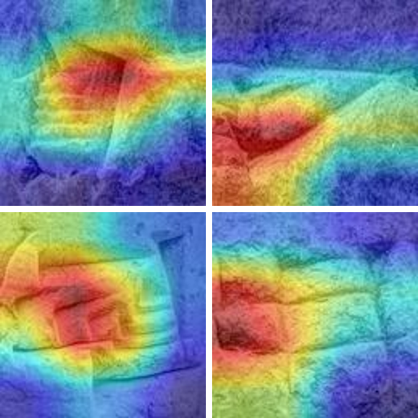

Many cuneiform tablets were dug up or sold without any record of where they were found. This project asks whether the shapes of individual signs are enough to tell where a tablet was written, giving philologists a data-driven starting point.
Approach
Encoding signs. Off-the-shelf encoders like ResNet-50 and DINOv2 sorted signs by writing material, clay vs. stone, instead of by shape. Fine-tuning EfficientNetV2-S on 266-class sign identification fixed this and gave a 1,280-dimensional embedding for every sign.
Exploring variation. Projecting the embeddings with PCA, t-SNE and UMAP and clustering them revealed variant forms of the same sign, such as monumental, cursive and conjunct forms of AN.
Predicting provenance. An EfficientNet-B0 classifier with tablet-level splits, so no text leaks between train and test, inverse-frequency weighting for rare cities, and Optuna tuning. Holding the period constant showed the model learns region, not era.
Interpreting. Grad-CAM shows where the model looks: correct predictions had tighter attention than incorrect ones.


Results
| Task | Macro-F1 |
|---|---|
| North / south / periphery, all periods | 0.93 |
| North vs. south, Neo-Babylonian only | 0.95 |
| 16 cities (chance: 0.017) | 0.68 |
| 5 Ur III sites | 0.68 · 0.89 without Nippur |
Region survives period controls. With the time period held constant, north and south are still told apart with 98% accuracy, so the model is picking up regional writing habits rather than changes over time.
Standardized script is harder. The Ur III administrative centers are the hardest group to separate, with Girsu and Umma most often confused.
Where the model looks. Correct predictions had tighter Grad-CAM attention than incorrect ones (0.31 vs. 0.41 spread).
What this means. A tablet’s general findspot can be predicted from the appearance of its signs alone, which points to real differences in scribal tradition between regions.
Next steps
- Aggregating sign-level predictions into one tablet-level prediction.
- Create an online space for this tool to be used freely and accessibly for researchers.
- Growing the data for the smallest cities.
- Holding period and findspot constant to try to differentiate scribal handwriting and trace the works of a single scribe.